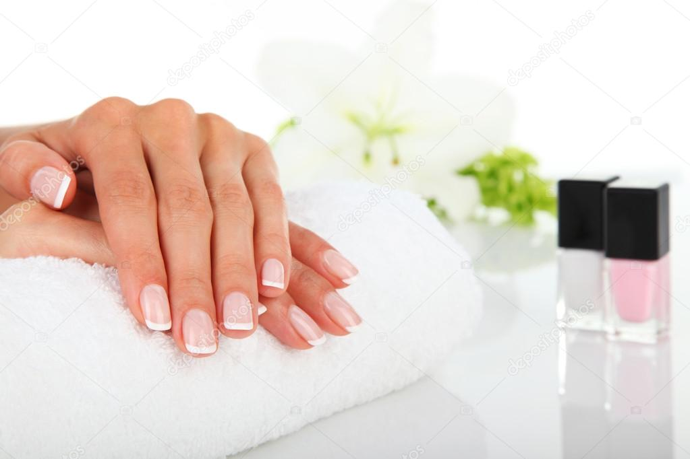
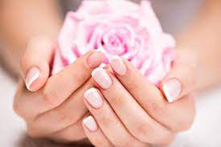
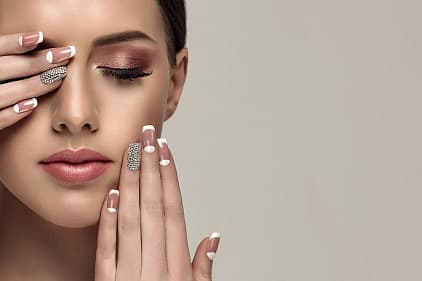
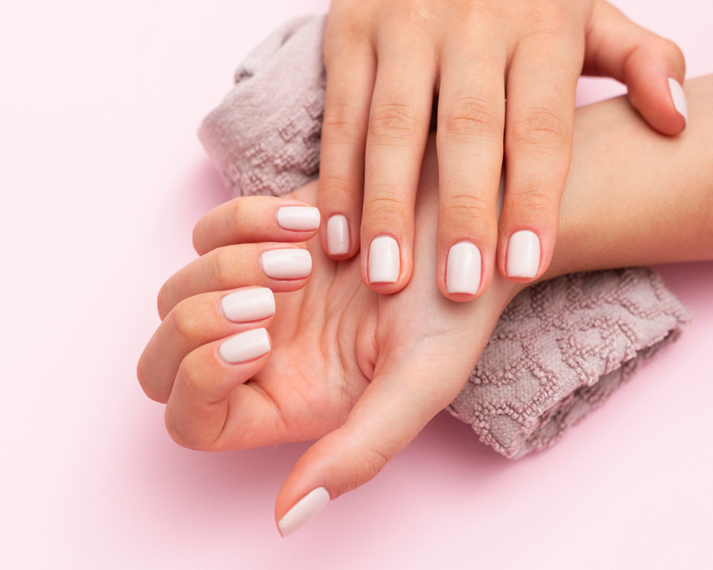

Забота о руках и ногтях – это залог сильных и красивых ногтей. Можно выполнять определенные процедуры самостоятельно, но многие предпочитают обращаться к специалистам. От правильно проведенных манипуляций будет зависеть конечный результат.
Различают два способа подготовки и проведения маникюра:
гигиенический маникюр;
декоративный маникюр.
При этом, гигиенический маникюр послужит основой для качественного декоративного.
РАЗНОВИДНОСТИ ГИГИЕНИЧЕСКОГО МАНИКЮРА
В зависимости от того, какими способами проводится работа с кутикулой (ее размягчение и удаление), можно выделить несколько видов маникюра.
1. Классический (обрезной) маникюр. Самый распространенный способ размягчения и удаления кутикулы – её размачивание специальным раствором. С этим видом маникюра знакомятся все начинающие мастера на обучающих курсах. Суть метода заключается в следующем:
руки клиентки проходят обработку с помощью дезинфицирующих средств;
ногти подпиливаются, им придают необходимую форму;
проводится смачивание рук в специальном растворе с маслом;
кутикула осторожно отодвигается специальной палочкой или лопаткой;
кутикула легко удаляется ножничками или кусачками для кожи;
руки просушиваются полотенцем;
на кожу наносится смягчающий крем.
Европейский (необрезной) маникюр. Этому виду маникюра также в обязательном порядке обучают на курсах или в нейл-школах. Этот способ не травматичный, безопасный, подходит обладателям тонкой кожи с близко расположенными к кутикуле кровеносными сосудами.
Его основное отличие в том, что после опиливания ногтей и замачивания рук, кутикула не обрезается, а отодвигается палочкой. Руки клиента погружают в витаминизированный раствор, и, когда кожа размягчится, работать с кутикулой становится проще. После такой обработки кутикула растет не так быстро, как при обрезании.
Маникюр с помощью специальных препаратов. Во время обучения мастерам также объясняют этот способ обработки кутикулы.
В отличие от классического, такой маникюр считается быстрым и доступным вариантом в домашних условиях.
Суть метода заключается в нанесении на поверхность вокруг ногтя специального состава для размягчения на основе фруктовых
кислот и масел. После чего кутикула «стирается» специальной пемзой. Руки обрабатываются смягчающим и увлажняющим гелем.
В специализированных магазинах для маникюра есть различные средства от средних вариантов до самых дорогих по цене.
Аппаратный маникюр. Это сравнительно новый вид обработки ногтей и кутикулы с помощью специального аппарата.
Оборудование имеет абразивные насадки (фрезы) разного предназначения. Аппаратный маникюр проводится без
предварительного замачивания рук – по сухой коже. Такая процедура предупреждает расслоение ногтей и быстрое
нарастание кутикулы, рекомендована для сухой кожи.
Работе с таким аппаратом учат только на специальных мастер-классах и курсах. С помощью аппарата можно о убрать кутикулу
и разные кожные неровности вокруг ногтя.
Комбинированный маникюр. Зачастую даже аппаратный маникюр не проходит без использования специальных инструментов.
Популярность приобретает комбинированный маникюр – это техника, которая сочетает некоторые вышеописанные виды
маникюра. Благодаря такой комплексной обработке ногтевой пластины и кутикулы достигается максимальный эффект —
маникюр выглядит более аккуратным, кутикула растёт медленнее и результат процедуры сохраняется гораздо дольше.
Правильно подобранный профессиональный инструмент имеет особое значение в работе мастера. Продукция бренда STALEKS PRO –
это кусачки и ножницы для кожи или ногтей, лопатки с разными рабочими частями, лазерные пилочки. С ними добиться
идеального результата проще.
Это зависит не только от кожи, но и от выбранного типа массажа лица. Самый распространенный – косметический массаж. Он делается с использованием специального крема или масла, которые подбираются с учетом особенностей кожи клиента. Например, если кожа сухая и склонна шелушиться, то используется питательный крем, при жирной работают по гелю.
Популярностью пользуется пластический массаж лица, которому свойственны прижимающие сильные движения. Такой массаж показан для тонкой кожи, на которой легко развиваются мимические складки – в этом случае массажисты используют только тальк, без специальных кремов.
А щипковый массаж лица сопровождают антибактериальным тальком: его антисептические свойства весьма кстати при лечении проблемной кожи.